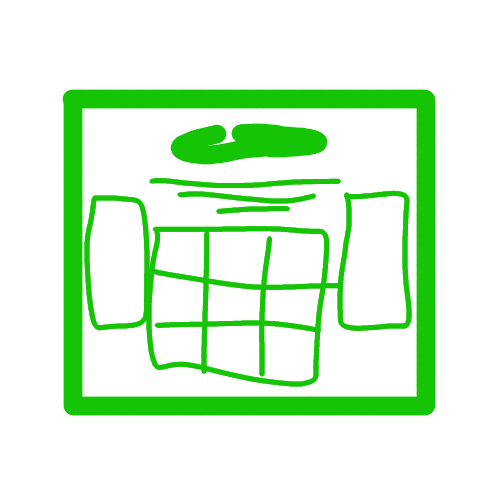
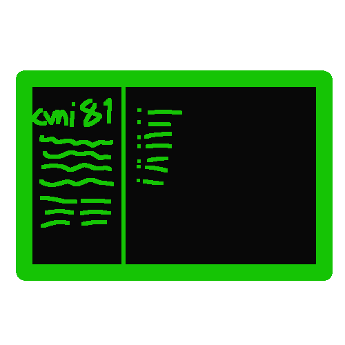

You gingerly open the notebook, looking out for anyone that calls you out. No one did.
22/12/2023 (~13:00)
Hello again!
Yeah, this project keeps popping in and out again h
A bunch of stuff's been happening irl that has kinda squandered the websiting, mainly i got into uni,
also tried to get into irl activism there (and anti-racism too, as well as in this website (or blog
but idk) but idk if its. worth the energy, i don't really know right now maybe! (lots of idks)). But
now this semester's uni is pretty much over so i decided to. get back to websiting!
Another redesign yayyy
So, ive decided to change the website up. again.
Work Sans (the previous font) now feels wide to the eye and. literally hurts to look at now, so i'm
switching to. Uncut Sans. I used to care too much about the name but not anymore IT LOOKS GOOD OK
And also switching the monospace font to Iosevka bc yes
I'm keeping Space Grotesk for misc bc. yes
For serif i might use C059, idk yet
And might use Public Sans and Libre Franklin in other places if i feel like it
And another thing is i'm keeping text in horizontal boxes for buttons and links to other pages and
stuff, but not other things like these journal entries or detail tags. Keeping it Simple!
So. that's pretty much it. Also this entry was made days before i added it to the page so. h
19/8/2023 15:43
I've added doodles from notebook no. 15 to the site.
Several of them are of black people. It was at that time when i started doing
anti-racist research, and often felt enraged at the situation, but
not really enough to instill change thanks to the comfiness my skin color
gives me in this shit ass society. And when i was adding the {meanings} of the doodles.
I noticed. Not many of them had any, except the {don't you dare erase me}, from notebook
no.14 and the sad girl on the bed walking with a backpack; when i learned about the importance
of hair to black self-esteem. Though i made an error in drawing her combing her hair without
researching and realizing you don't do it that often to warrant a whole doodle.
I think from now on, in my regular doodles i'll fill in some with a darker skin color;
Should i? I can't be colorblind. Shut up and draw. Attently, carefully.
If you have anything to say about them, i implore you to. With fervor if necessary.
Tell me i suck at being an ally.
DM me through discord.
""""...just draw, Mardock!""""
9/8/2023 10:30
Hey! I'm working on the website again, going back again to a dark theme overall and more inspired
somewhat by the first site style (and also back when this site was just a carrd!)
Also using more divs with 1px borders and NO BORDER-RADIUS. And maybe some gifs here and there.
Also also i'm doing this misc page first, because i always left it to the end, even though
there's so. much. stuff. Especially the folder.
And it's been a while since i've been focusing a lot on researching anti-racism! It's the first
collection in the collections page (that i have yet to add back), and i really recommend whoever's
reading this to learn more and just. become a better person!
Anyways, i'm gonna go back to getting the other misc pages to their place! Maybe even separate some
pages in this journal to talk about the colors i use here! Mayhaps.
29/6/2023 12:57
Hi again, i'm doing another redesign yeah...
I need to start trying to make just something that i like how it looks and not overthink too much...
Go light on myself yk? Everyone needs a bit of that.
I'm using the glorious google material design builder (add link here!) that lets me add a color and get all the lightness values i need!
...and use the colors completely incorrectly to the actual design guidelines-
Also i'm not gonna add a musicians page bc i'd rather you just see what music i like instead of me ranking and describing them in a (probably definitely) biased way; or a websites page bc they were all basically stolen from vsauce's dong so... yeah
I also just wanted to have the website have less, this folder already has a lot of stuff...
But i think archiving is a good thing, not just to make sure the past isn't forgotten, but also to see how we change!
Actually this is being written before i added the misc to the index and even rereradded the site link to my status.cafe so there might be another journal entry after this one!
Oh and also i went almost to the time i went to sleep yesterday just coding the website, i'm limiting my time working on this to at most, like, midday. I don't want to worsen my insomnia.
1/4/2023 21:58
Hi!!! It's still not done...
Today i've finished the {doodles} page, and that's when i hit a wall:
either make the page more accessible by changing the colors and redoing the gifs AGAIN or,
even worse, remove the gifs entirely, or just leave it as is.
I decided to do the latter!
Ever since when i started this other redesign, i felt like a big company ridding the site
of all its life, all the fonts, the gifs... so i found a compromise!
Use 2 fonts (or 3 if i decide to keep Space Grotesk for the misc pages), one sans serif (Work Sans)
and one serif (Crimson Pro)!
Hopefully tomorrow i'll finish the whole thing and add a bunch of stuff to the folder,
like another rereredesign when i fully gave up and tried to remake the site from scratch
with minimal images! ...only to come crawling- nay, running back to this! This site's rendition of an
April Fools joke-
This is what the site is supposed to be! It's nowhere in particular, each page has it's own feel, it's
FUN!!!
I swear, i've never felt this good after a redesign, it almost always feels like a step in the wrong
direction, this doesn't!! Hooray!
I'll try to add more doodles, maybe some renders, i've done a bunch of them without adding them here,
aaa i'm so excited! I love and hate this site at the same time.
I need dinner.
30/3/2023 19:50
Hi! It's not been a month this time
One thing i realized about the design on mobile is it's basically impossible to
hit the little triangle in the navbar to see the rest of the sites on the list!
I tried, as you can see in the misc page, to just separate the home link from the
(more) details thing, but it's clunky and it doesn't alight properly when the details
tag is open.
Also, i realized this would be really time consuming to add to ALL the pages. Also also, i found
a new favorite font, Work Sans! So i'm rerere[...]designing the site with only that one font,
having only the colors change.
I'm doing this because it kinda connects the pages a bit more, it lets me use the same
css file for (almost) all pages with colors being done separately and, more importantly, it's
less data the phone/computer has to keep to display the page properly, which is a problem
that my friend Natalie also talked to me about.
I'm done up to the words section, by tomorrow i'll (hopefully) have finished everything!
Also i'm taking this as a chance to make the colors WCAG compliant (having a 4.5:1 contrast ratio),
or at least the ones i can without adding another color to the scheme.
...this was a big entry wow
14/3/2023 15:46
Hi, it's me from the last's entry's future and your past. I'm done adding the sidebar!
I also wanted to change the homepage back to the old version with a sidebar, but idk
how that'd work exactly on mobile without things having to scroll.
So yeah! I'll be able to sleep well tonight. If you find anything i did wrong please
please please PLEASE tell me
alright, i'll see you in a month
13/3/2023 21:33
Hello again!
...i'm redesigning the site again. But not completely this time! I'm readding the whole
sidebar thing this used to have, but now with the light mode and not looking terrible on
mobile!
I've done all but the websites, the words and the homepage. I'll do these tommorow bc my
head is already too fried :%
Also i might change some colors here and there for better readability and accessibility
and things.
6/2/2023 14:33
Hi! I just got done with rereredesigning the whole site! The 4th time actually!
This time, i changed the main style to light mode, more inviting than the dark mode thing
we had before, but (kinda) still as slick!
Also, a big improvement: it doesn't suck on mobile anymore!
I learned how to make things designed with mobile first in mind instead of desktop like before.
And i tried my best making it look decent, even on my crappy phone with Firefox, which apparently is worse than
Chrome for some reason :3
If you have any quibbles about it, i'd be happy to hear at my discord (@cvni81#4837)!
Also big thanks to a new friend, Natalie! They helped me with feedback for the site!
2/2/2023 12:28
AAAAAAAAAAAAAAAAhello there
It's been a long long long time since i've done anything creative or... useful with this website.
So today i decided to do that. By changing the layout of the site again.
I tried to make the sites like that dumb zine I talked about last year, with 2 rows.
As you can tell, it didn't work. And like the entIRE REST OF THE SITE-
... sorry
Like the entire rest of the site, it looked like absolute crap on mobile.
We really need to learn to do that...
And i started with a welcome page like so many other homemade websites have...
You can still look at it if you want.
I didn't use it because it doesn't mesh well with the rest of the site, the handdrawn thing gives it a cozy, homey feeling,
which this website ABSOLUTELY does not have.
I didn't bother saving the other sites because i stopped early at... 3 pages.
...ugh... This website's dead isn't it.
""""home""""...
I just don't have anything to add to this dumb site!
I don't write often, i'm not doing blender renders much anymore, all i can do is add some doodles that look like crap.
Sorry for rambling.
1/12/2022 12:56
Hey uh
I know it's a bit late, this was a thing that happened like
a week ago
maybe more
but i remembered to do it now so i'm doing it now.
I wanted to do a zine, yknow
like a magazine but small and indie and stuff
But it hit me unsurprisingly quickly that
i don't really have any good ideas for things to put there.
And i wanted to reuse a thing that already was in the words section, yknow the jan poem. yeah
It even had some pictures, i'm...
I'm kinda proud of it.
It also had a thing about botany? But i... It's not good. It's just-
I know, i know, i have to work on the site more...
Look, it's...
I just don't know what to do with that thing!
Here you go. It's not got the biology part because...
I'm not particularly proud of that one...
Yeah you know.
It's in the folder too if you wanna take a look there.
And i might do something with that jan poem. I don't know.
Alright, stay safe. Alright, bye.
7/11/2022 21:27
Hello again!
It's been a while since the last update, though i've been changing some bits of the site every now and again...
But ever since i changed the style off the sidebar thing, it's gotten quite stagnant.
I guess that's better than the frantic changes i used to make to this site.
It's what i wanted it to be!
Now for figuring out new things to put here... I'm thinking about making pages or "shrines" about
specific colors i like. Maybe something will come from that. Maybe not! I don't know.
25/10/2022 15:27
I forgot to add this when the change was made yesterday, so i'm doing it right now.
Yeah, i'm not doing the thing from the last entry.
Instead, i made it simpler.
Less words at the start and got rid of the sidebar (just by removing the border and background in the css file).
And... I actually kinda like it. Wow.
6/10/2022 21:43
Hello! Welcome to another episode of...
THIS WEBSITE SUUUUUCKSSS
This time, I want to change the layout again again, to something more... normal? I suppose?
Something with sidebars, something like this:

And put the sitelog right on the index page.
I have no idea when this will be done, but it's another step towards me thinking the website is decent.
28/9/2022 21:38
I felt like making a couple english things today, and now they're here!
And i had to change nimi mute to words. Everywhere.
Also i found that you can make links shorter, so i did that to all pages.
...until i found that pages within folders broke.
So i decided to reset it all and aaghhh it took much more than it had to.
But it's done now yay!
26/9/2022 17:13
Alright! It's all done now. I changed all the pages to the new sidebar style.
Also, I kinda wanna make this journal a bit less... chunky.
But I don't know.
25/9/2022 20:51
Alright. I'm done "porting" everything to the new style with the sidebar.
Only thing left is removing the brackets in the doodle gifs because they don't fit in anymore.
But that's tomorrow.
24/9/2022 18:01
Ok, so. I'm still making the front page, i think it's done now.
But i'll probably have to take the site off to re-start it all at once.
I'll add a sidebar to every page, except the misc ones.
It'd ruin the rpg vibe thing, i think.
Oh and move difference to the archive. It's a bit off for the site's vibe.
But then it's perfect for the site's vibe. Eh. I think putting a manifesto right upfront isn't a good idea.
23/9/2022 21:10
I feel like remaking the whole site.
Something like this maybe (but white instead of green of course (or maybe even some gray ooh))

(22:31) Alright i did a little bit but it's getting late again, so it'll have to be finished tomorrow.
22/9/2022 14:50
To-do:
- make this book into an actual book (it'll take learning on click and some javascript)
- make the folder into something more interesting than a list
No guarantees it'll all be done today though. Making websites takes time.
(16:23) I instead put each entry into its own container. Not a whole book, but still a big improvement in my opition.
Also changed the links in the entries to dark green instead of gray for contrast.
(20:12) I have made a
guestbook! If you feel like giving me feedback, i'd be super super happy to hear it, good or bad.
It was originally supposed to be a thing where you could write at the end of this notebookbook, but i don't want people to have to go through a maze of links
just to give feedback.
20/9/2022 21:46
So... I kinda wanted to add a website visitor counter to this, so i can tell if someone's actually coming here.
But many solutions just counted visits and just reloading uppded the count, and ones which counted separate visitors
required tracking the visitor's IP address which i DEFINITELY do not want to do.
So... I guess i'm staying in the dark.
Also i kinda want to make this look like an actual book, or with pages or something.
But that's tomorrow.
19/9/2022 18:02
Now the miscellaneous page is like a text-only rpg! sort of... Why not?! This whole basement thing is already all over the place.
Someday i'll put the phrases into actual sticky notes, who knows?!?!
(19:04) I did it yay
17/9/2022 12:36
I renamed the handdrawn page to doodles.
(17:00) Idea: make header gif thingies that are slightly different and random everytime someone loads the page.
(17:11) I'M DONE!!!! I've separated all the doodles into categories, this took so longg, all the gifs...
But i'd say it was worth it.
(17:35) After some nitpicking, i'd say i'm... satisfied with how it turned out. The colors didn't work well with the grid,
especially the cyan.
16/9/2022 20:21
After snooping around for some cool websites to put in my buttons page and
looking at other's websites, i think my website is lacking animation.
Things like gifs, they make the experience more... interesting than just boring, still text.
I'm working on adding more drawings to handdrawn - it'll probably be done by tomorrow -
and one of the things i'm adding are animated buttons to different categories (just 3 though).
Also on the plans is adding more drawings to the other misc pages like this one and maybe even animate them.
I think this is a big step on making my site look less... boring i guess.
(22:04) Renamed this page from "paragraphs" to "basement journal", because that's basically what this is.
15/9/2022 22:05
I don't know if i should keep the entrance to here a bit hidden
or make it more obvious.
If someone's been upstairs they probably didn't even come down here.
Which, i don't know if it's a good thing or a bad one.
(22:15) I made the entrance more obvious now.
13/9/2022 15:43
I now realize i'm spending a lot more time here in the basement than upstairs.
But i guess that's a good thing! I'm being a lot more creative here, where i'm not bound to just one style.
Here i can make whatever i want and it'll fit, because it's the basement.
But... I'm kinda sad that upstairs is remaining relatively unchanged.
I guess when i make some new text in toki pona or blender render or button or something that fits the style of upstairs, i'll put it there.
Also i think i have to make a button, i know this site already has a bunch of buttons, but none of them works as a button.